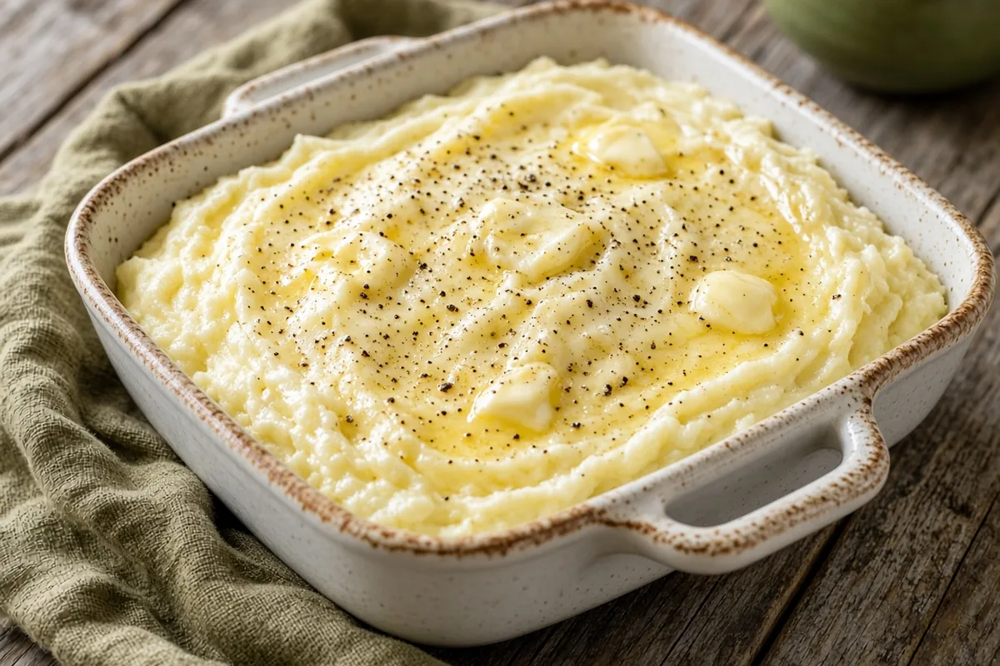

Delicious, Creamy Mashed Potatoes
Rich make-ahead mashed potatoes with butter, cream cheese, and half-and-half, seasoned with Lawry's and warmed in the oven under pats of butter.

Adapted from The Pioneer Woman
10 servings
By
Yield: 10 servings
Prep:
Cook:
Total:
Difficulty: Easy
Ingredients
- 5 lb russet or Yukon Gold potatoes
- 3/4 cup (1 1/2 sticks) butter, plus a few pats for the top
- 1 (8-oz) package cream cheese, softened
- 1/2 to 3/4 cup half-and-half
- 1/2 to 1 tsp Lawry's Seasoned Salt
- 1/2 to 1 tsp black pepper
Instructions
- Peel the potatoes and cut them into evenly sized pieces. Put them in a large pot of simmering water, bring to a boil, and cook 30 minutes, until a fork slides in with no resistance and they almost fall apart.
- Drain the potatoes well, return them to the dry pot over low heat, and mash them, letting the steam escape, about 2 minutes. Heat the oven to 350°F.
- Turn off the heat and add the butter, cream cheese, and about 1/2 cup of the half-and-half. Mash until smooth, then season with the seasoned salt and black pepper, adding more half-and-half if you like them looser.
- Spread the potatoes in a medium baking dish, dot the top with pats of butter, and bake 15 minutes, until the butter melts and the potatoes are hot.
Notes: Make them up to 2 days ahead and refrigerate before the oven step; bake about 30 minutes from cold.